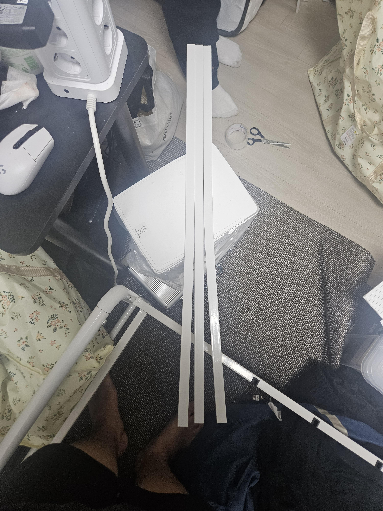
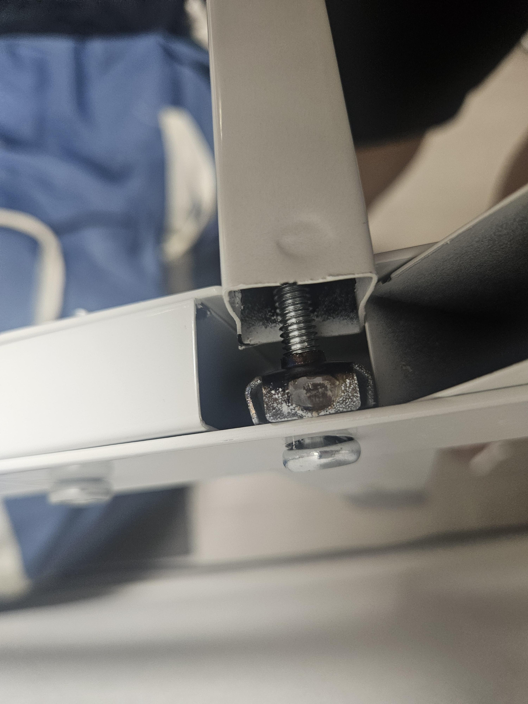

애초에 갈비살 길이도 다르네
근데 웃긴점
1. 어제 상담사 a가 나에게 연락이 왔을때는 판매자와 연락이 안된다 했음
2. 회수도 불가능하니까 자체 폐기 하라는 식으로 말함
3. 나는 목 허리 다쳐서 무거운거 옮기기 힘든상태다 라고 말하니 블랙컨슈머 취급함
4. 납득이 안되서 끊고 다른 상담사에게 연결
5. 같은날 30분 뒤 다른 상담사 b가 말하길 판매처에서 '조립 실수이니 보상은 일절 할수 없다.' 라는 수신을 받았다고 말해줌
6. 왜 말이 달라졌냐고하니까 말 얼버무리고 위로차원에서 쿠팡캐시 5만원 보내드린다. 그게 보내드릴수있는 최대한계다 라고 해서 안받겠다고 함
7. 마찬가지로 회수 불가능하다고 하고 cs팀에서 월요일날 다시 연락 준다고 함
8. 어쩔수 없이 자체폐기 하려고 하는데 쎄해서 다시 갈비살 조립해봄, 그게 위 영상
9. 자체 폐기 후 다음날, 영상 보낸다고 다시 연락함
10. 그러자 상담사 c는 내가 회수를 거부했다고 메모가 남겨져있다고 말함
11. 왜 말이 달라지냐고 하니 cs팀과 상담하라고함
여기까지가 모든 전말임
나는 지금 목허리에 심한 통증이 있어서 월요일날 병원 갈 예정
매우 슬프다
나는 가구는 최소 이케아다
가구 만들줄 모르는 어디 뭐 중국업체 같은게 너무 많음